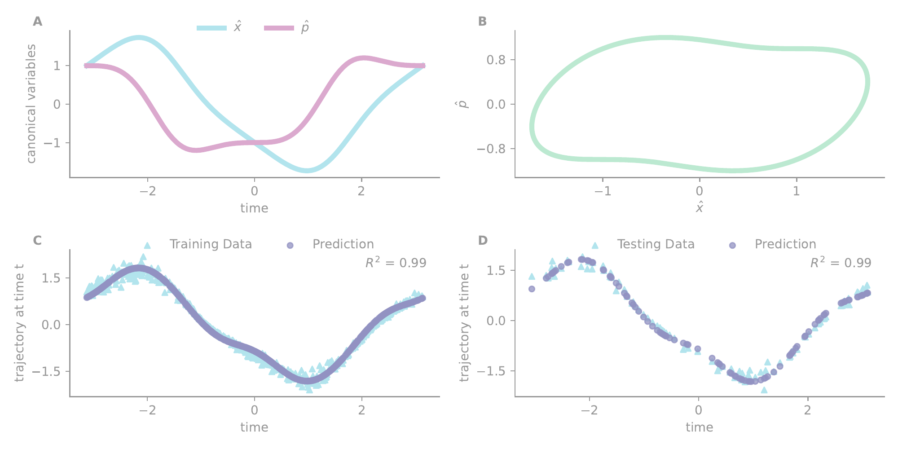
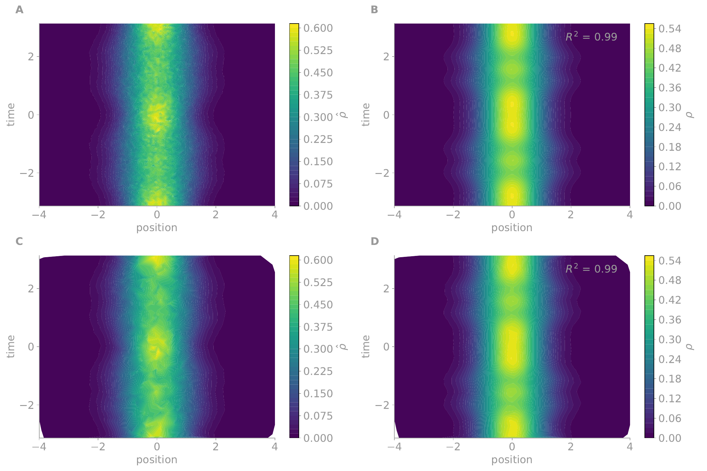
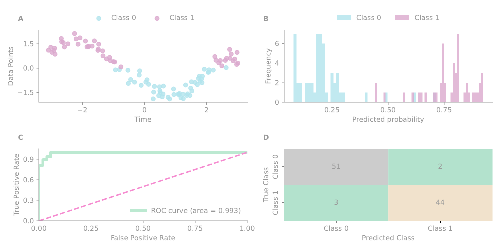

2024 to 2026
(Machine) Learning in the trap field of a confined ion
A supervised learning scheme that replaces the parametrised quantum circuit with the time-varying electromagnetic potential of an ion trap. The motion of the ion under a quadratic confinement is exactly solvable, and both regression and classification acquire closed-form predictors written in the canonical observables themselves. Work carried out at the Luxembourg Centre for Systems Biomedicine, University of Luxembourg, and published in Quantum Machine Intelligence [1].
The trap field as the hypothesis
Variational quantum algorithms encode a learning model in a parametrised circuit and update the gate parameters through repeated evaluations on hardware. Two difficulties limit this route. Gradients of the cost function decrease exponentially as circuits deepen or as the number of qubits grows [3, 4], and the learned object, a list of gate angles, admits no direct physical reading.
The scheme described here removes the circuit. A single ion confined in a Paul trap [2] moves under a quadrupole potential whose amplitude is set by modulated voltages. Along one coordinate the motion is governed by a quadratic Hamiltonian in which the elastic field \(\beta(t)\) is the only free function.
Dimensionless variables are used throughout, obtained from \(t = \omega' t'\), \(p = \sqrt{1/m\omega\hbar}\,p'\) and \(x = \sqrt{m\omega/\hbar}\,x'\), under which the canonical quantisation reads \([x,p] = \ii\).
The proposal is to treat \(\beta(t)\) as the learning hypothesis. The trainable object becomes a voltage programme rather than a register of gate angles, and the prediction is read from the evolution of measurable observables. This differs from physics-informed machine learning, where a classical model is trained under physical constraints, and from hybrid variational methods, where parameters are updated through repeated circuit evaluations. Here the quantum dynamics is the learning mechanism.
Exact solutions and the admissible fields
Because \(H_\beta\) is quadratic, the Heisenberg equations reduce to \(\dd x/\dd t = p\) and \(\dd p/\dd t = -\beta(t)x\), which carry the same structure in the classical and the quantum regime. The canonical pair \(Q = (x\;\;p)^\intercal\) therefore evolves by a linear transformation generated by a symplectic matrix.
The trace \(\Gamma(t) = \tr u(t,t_0)\) classifies the motion. For \(|\Gamma| > 2\) the eigenvalues \(\kappa = (\Gamma \pm \sqrt{\Gamma^2-4})/2\) are real and the ion defocuses [6], for \(|\Gamma| = 2\) the system sits on a separatrix where stable motion remains possible [8], and for \(|\Gamma| < 2\) the eigenvalues are complex and the ion oscillates around the trap axis [9, 10, 11]. Only the third case is useful for learning, since a defocusing field loses the ion.
When \(\beta(t)\) is even over \([-\tau,\tau]\) the Cauchy problem in eq. 2 integrates in closed form without any adiabatic invariant [7, 8], and the evolution matrix is written in terms of a single real function \(\theta_\mathcal{P}(t)\) and its first derivative.
The function \(\theta_\mathcal{P}(t)\) is almost arbitrary, subject to being non-singular and bounded on the interval and to two admissibility conditions. Where \(\theta_\mathcal{P}(t) = 0\) the derivative must satisfy \(\dot\theta_\mathcal{P}(t) = \pm 1\), which places the system at \(\Gamma = \pm 2\) and marks the thresholds at which stability switches. Where \(\beta(t)\) and \(\theta_\mathcal{P}(t)\) are both non-zero with vanishing first and second derivatives, the third derivative \(\dddot\theta_\mathcal{P}(t)\) must vanish, which identifies a momentary equilibrium of the motion.
The field is recovered from \(\theta_\mathcal{P}(t)\) by a second-order nonlinear equation whose right-hand side acts as an effective self-driving term.
For a constant field \(\beta(t) = \omega_0^2\) the solution is \(\theta_\mathcal{P}(t) = \sin(\omega_0 t)/\omega_0\) and eq. 3 becomes a symplectic rotation of period \(2\pi/\omega_0\).
This inverse ordering is what makes the scheme trainable. Optimising \(\beta(t)\) directly, through an unconstrained function or a neural network, produces fields that need not confine the ion. Optimising the coefficients of \(\theta_\mathcal{P}(t)\) instead and reading \(\beta(t)\) off eq. 4 keeps every candidate within the admissible class by construction, and bounds on \(\beta(t)\) translate into bounds on the parameter set \(\mathcal{P}\) that respect the voltage limits of the trap.
In the implementation the field is never written by hand. The ansatz is evaluated on a tensor with gradient tracking enabled and eq. 4 is applied through automatic differentiation.
theta_t = self.theta(t_tensor)
d_theta, = torch.autograd.grad(theta_t, t_tensor,
grad_outputs=torch.ones_like(theta_t), create_graph=True)
dd_theta, = torch.autograd.grad(d_theta, t_tensor,
grad_outputs=torch.ones_like(d_theta), create_graph=True)
# theta = 0 is admissible only with d_theta = +-1 (Gamma = +-2)
zero_indices = torch.abs(theta_t) < self.betadelta
d_theta[zero_indices] = 1.0
# eq. 4 solved for beta
num = -(2 * dd_theta * theta_t - d_theta**2 + 1)
beta_t = num / theta_t**2Regression on canonical observables
A dataset \(\{t, \hat\Xi\}\) pairs time, the feature, with a target observable of the ion motion. The predictor follows from eq. 3 without any further approximation. Taking the coherent trajectory as the target, the predicted position at each sample is a linear combination of the ansatz and its derivative weighted by the initial conditions.
The conjugate observable requires no separate training. Position and momentum evolve through the same \(\theta_\mathcal{P}(t)\) by eq. 3, and a fit to \(\hat x\) alone predicts \(\hat p\).
The ansatz is a truncated odd sine series, \(\theta_\mathcal{P}(t) = \sum_{j=1}^{N_\mathcal{P}} a_{2j-1}\sin([2j-1]t)\), with \(\mathcal{P} = \{a_{2j-1}\}\). The truncation enforces differentiability and fixes an explicit bandwidth. Three coefficients suffice for the example below.
The parameter space is scanned by Bayesian optimisation [12]. A Gaussian process prior is placed on the negative cost, updated at each iteration with the sampled pairs \((\Theta, -\mathrm{RMSE})\), and an expected improvement acquisition function proposes the next candidate. Training stops when the cost shows no further improvement, which keeps the model from memorising the training subset.
Synthetic data were produced from a field built as a superposition of four harmonics, \(\beta(t) = \sum_{j=0}^{3}\beta_j\cos(\omega_j t)\) with amplitudes \(25/24\), \(1/11\), \(37/36\) and \(1/12\) and frequencies \(0\), \(4/25\), \(2\) and \(4\). Integrating eq. 2 for this field gives complex eigenvalues and therefore focused motion. Applying the resulting evolution matrix to \((\hat x_0, \hat p_0) = (1,1)\) over \([-2\pi, 2\pi]\) at 500 uniform time points produces observables that return to their initial values at the end of the interval, an evolution loop. Gaussian noise at 10% was then added to both.

The trajectories in Fig. 1 are quantum expectation values of the canonical observables rather than deterministic classical paths [6, 14]. The additive Gaussian noise stands in for readout and estimation uncertainty, which is approximately normal when the estimates are formed from many repeated detection events.
The scheme extends beyond the canonical pair. The same exact solutions propagate a Gaussian wave packet, and the regression then runs on a spatio-temporal target.

Binary classification
Classification discretises the target into classes under an arbitrary cutoff and leaves the dynamical core untouched. The trained observable is mapped to a probability by the logistic sigmoid, and the cost becomes the binary cross entropy.
A sample is assigned to class 1 when \(\Pi \geq \Pi_\text{thr}\) and to class 0 otherwise, with the threshold at \(1/2\) for a balanced dataset. The predictor \(x(t_j)\) inside the sigmoid is still eq. 5, and the optimisation still runs over \(\mathcal{P}\).
The trajectory of Fig. 1 was split at its median into two balanced classes, with 30% Gaussian noise added to simulate harsher measurement conditions. The 500 points were divided into 400 for training and 100 for testing, using the same ansatz as the regression.

Multiclass problems follow by the standard reductions, either one against the rest with \(N\) classifiers or one against one with \(N(N-1)/2\) of them [13]. Nothing in eq. 3 changes.
At the physical level, an optimised \(\mathcal{P}\) defines a voltage programme. Any ion introduced into the trap with the prescribed initial conditions will then move in agreement with the learned target. For classification the same field predicts the time intervals over which the ion remains within a given spatial region.
Scope and limitations
No computational advantage is claimed. The optimisation loop demonstrated here is classical, with Bayesian optimisation proposing candidate parameters and updating a surrogate model on a classical cost. The quantum resources enter through a single evaluation, namely the preparation of an initial motional state, evolution under the prescribed \(\beta(t)\), and measurement of the relevant expectation values. Model selection and stopping criteria are classical post-processing.
Exactness and interpretability rest on the dynamics being quadratic and on the readout being an expectation value or another low-order moment. Expressivity is therefore restricted relative to non-Gaussian continuous-variable feature maps [5] or deep variational circuits. The examples treat a single mode along a single coordinate.
The noise model is additive and Gaussian. More realistic models can be accommodated without touching the dynamical core, by replacing the RMSE or the cross entropy with a weighted or robust objective, or with an explicit likelihood that scores candidate parameters against the measurement statistics.
Experimental realisation remains the open step. The scheme prescribes a field that is admissible by construction, and demonstrating the learning operations on trap hardware is the natural continuation.
Code and data
Three modules carry the work. iontrap.py holds the evolution machinery, with the ansatz, the field recovered through eq. 4, the symplectic matrix of eq. 3 and the Gaussian wave packet. canonicalRegressor.py and canonicalClassifier.py hold the two learning algorithms, each with its objective, its admissibility constraints on \(\theta_\mathcal{P}(t)\) and its Bayesian fitting loop over botorch. The synthetic datasets are distributed as CSV files named by the trap parameters that generated them. Everything reproducing the figures is available in the supplemental materials of the paper [1].
- J. Fuentes, Quantum machine learning with canonical variables, Quantum Machine Intelligence 8, 19 (2026). 10.1007/s42484-026-00373-w
- W. Paul, Electromagnetic traps for charged and neutral particles, Rev. Mod. Phys. 62, 531 (1990).
- J. R. McClean, S. Boixo, V. N. Smelyanskiy, R. Babbush, H. Neven, Barren plateaus in quantum neural network training landscapes, Nature Communications 9, 4812 (2018).
- M. Cerezo et al., Variational quantum algorithms, Nature Reviews Physics 3, 625 (2021).
- N. Killoran, T. R. Bromley, J. M. Arrazola, M. Schuld, N. Quesada, S. Lloyd, Continuous-variable quantum neural networks, Phys. Rev. Research 1, 033063 (2019).
- J. Fuentes, Unraveling soft squeezing transformations in time-variant elastic fields, Dynamics 3, 299 (2023).
- B. Mielnik, Quantum operations: technical or fundamental challenge?, J. Phys. A 46, 385301 (2013).
- B. Mielnik, Quantum control: discovered, repeated and reformulated ideas mark the progress, J. Phys. Conf. Ser. 512, 012035 (2014).
- B. Mielnik, A. Ramírez, Ion traps: some semiclassical observations, Physica Scripta 82, 055002 (2010).
- B. Mielnik, A. Ramírez, Magnetic operations: a little fuzzy mechanics?, Physica Scripta 84, 045008 (2011).
- J. Fuentes, Quantum control operations with fuzzy evolution trajectories based on polyharmonic magnetic fields, Scientific Reports 10, 22256 (2020).
- J. Mockus, Application of Bayesian approach to numerical methods of global and stochastic optimization, J. Global Optim. 4, 347 (1994).
- R. Rifkin, A. Klautau, In defense of one-vs-all classification, J. Mach. Learn. Res. 5, 101 (2004).
- B. Mielnik, J. Fuentes, On the exactly solvable squeezing in symmetric evolution intervals, in Geometric Methods in Physics XL, 413, Springer (2024).